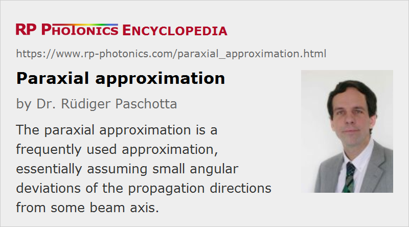

Paraxial Approximation
Definition: a frequently used approximation, essentially assuming small angular deviations of the propagation directions from some beam axis
German: paraxiale Näherung
How to cite the article; suggest additional literature
Author: Dr. Rüdiger Paschotta
Many calculations in optics can be greatly simplified by making the paraxial approximation, i.e. by assuming that the propagation direction of light (e.g. in some laser beam) deviates only slightly from some beam axis.
Paraxial Approximation in Geometrical Optics
Geometrical optics (ray optics) describes light propagation in the form of geometric rays. Here, the paraxial approximation means that the angle θ between such rays and some reference axis of the optical system always remains small, i.e. ≪ 1 rad. Within that approximation, it can be assumed that tan θ ≈ sin θ ≈ θ. The evolution of beam offset (distance from the reference axis) and beam angle in some optical system can then be described with simple ABCD matrices, because there are linear relations between offset and angle of beams before and after some optical component or system. The paraxial approximation is extensively used in Gaussian optics.
Paraxial Approximation in Wave Optics
When describing light as a wave phenomenon, the local propagation direction of the energy can be identified with a direction normal to the wavefronts (except in situations with spatial walk-off). If the paraxial approximation holds, i.e. these propagation directions are all close to some reference axis, a second-order differential equation (as obtained from Maxwell's equations) can be replaced with a simple first-order equation. Based on this equation, the formalism of Gaussian beams can be derived, which gives a much simplified understanding of beam propagation and of fundamental limitations such as the minimum beam parameter product. Essentially, the paraxial approximation remains valid as long as divergence angles remain well below 1 rad. This also implies that the beam radius at a beam waist must be much larger than the wavelength.
The propagation modes of waveguides, particularly of optical fibers, are also often investigated based on the paraxial approximation. The validity of the analysis is then restricted to cases with a sufficiently large effective mode area and sufficiently small divergence of any beams exiting such a waveguide.
The paraxial approximation is very well fulfilled in a wide range of phenomena of laser physics and fiber optics, but it is clearly violated in cases with very strong focusing, where commonly used equations such as θ = λ / (π w0) for the divergence angle break down. In that regime, polarization issues also demand special care. In particular, polarization components in the propagation direction can occur. For such reasons, the simulation of beam propagation then requires significantly more sophisticated methods. For example, beam propagation methods (propagating a two-dimensional array of complex field amplitudes) can be used which do not need that approximation.
Questions and Comments from Users
Here you can submit questions and comments. As far as they get accepted by the author, they will appear above this paragraph together with the author’s answer. The author will decide on acceptance based on certain criteria. Essentially, the issue must be of sufficiently broad interest.
Please do not enter personal data here; we would otherwise delete it soon. (See also our privacy declaration.) If you wish to receive personal feedback or consultancy from the author, please contact him e.g. via e-mail.
By submitting the information, you give your consent to the potential publication of your inputs on our website according to our rules. (If you later retract your consent, we will delete those inputs.) As your inputs are first reviewed by the author, they may be published with some delay.
See also: ABCD matrix, geometrical optics, Gaussian optics, Gaussian beams, fibers
and other articles in the category general optics
|  |
If you like this page, please share the link with your friends and colleagues, e.g. via social media:
These sharing buttons are implemented in a privacy-friendly way!